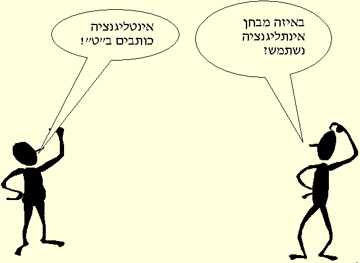
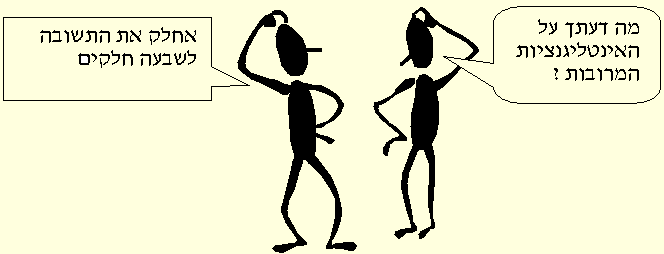

המורה: הגב' שרי בר-און
?מהן אינטליגנציות מרובות
?כיצד ניתן לבחון את פרופיל האינטליגנציות
המשמעות החינוכית של גישת האינטליגנציות המרובות
אינטליגנציות מרובות וחינוך מיוחד
להיות מורה בגישת האינטליגנציות המרובות
הנדרשים ללמידה בבית הספר, כמו זכירת פרטים, בצוע תרגילי חשבון ויכולת
מילולית. צמידות זו אינה מפתיעה , אם נזכור שמבחן האינטליגנציה הראשון פותח על
,ידי בינה וסימון על מנת למיין תלמידים בתחילת לימודיהם בבית הספר היסודי
בצרפת של תחילת המאה ה 20. מטרת המיון הייתה לבחון את יכולתם להצליח
בדרישות מערכת החינוך היסודית ולהפנות את המתקשים לחינוך מיוחד ולסיוע. הציון
במבחן התבסס על היחס בין יכולתו האישית של הנבדק לבין היכולת הסטנדרטית
.המאפיינת את קבוצת בני גילו ותואר כמנת המשכל
הגדרת האינטליגנציה על פי בינה וסימון: קיימים שלשה קריטריונים לפעולת
האינטליגנציה: חשיבה בכיוון מוגדר, כושר הסתגלות בעזרת פתרונות ארעיים
.והכושר לברור, לשפוט נכון ולבקר כל הנחה או פתרון
הפסיכולוגיים שחוברו על ידם מצויים בשמוש נרחב ומוכרים באבחון ילדים גם בחינוך
.המיוחד
הגדרת האינטליגנציה על פי טרמן (b>:<b>1921/>) רמת האינטליגנציה של הפרט
.פרופורציונית ליכולתו להמשיך בחשיבה מופשטת
הגדרת האינטליגנציה על פי וקסלר (b>:<b>1944/>) אינטליגנציה היא כושר , המתגלה
.באמצעות אתגרים המוצבים בפני הפרט ועל פי המשאבים שברשותו
בלום, <b>המוכר לכן מלימודיכן על הטקסונומיה של מטרות ההוראה<b/>, הגדיר
אינטליגנציה באופן הבא: חשיבה הפועלת בשש דרגות -<b> <b/>ידיעה, הבנה, יישום, ניתוח
.סינתזה והערכה. כל דרגה מתפרטת לסעיפי משנה מדורגים
:ההגדרות שהובאו לעיל מתייחסות לחשיבה כמגדיר של אינטליגנציה. להעשרה נוספת
.מידע אודות חשיבה וכישורים קוגניטיביים
,עם התפתחות סוגי המבחנים וחקר האינטליגנציה, התפלגו החוקרים ביניהם בשאלה
.האם האינטליגנציה היא כושר אחד או מכלול של מגגון כשרים
כללי המצוי בבסיס היכולת להפיק תהליכי חשיבה בכל התחומים וגורמי S יחודיים
.המכילים מיומנויות חשיבה בתחומים מוגדים ויחודיים
:מההגדרות שהובאו עולות ההבחנות הבאות
|
זאת תורנדייק ובורינג, שהגדרותיהם מעמידות את הגדרות האינטליגנציה שהובאו .כאן באור ביקורתי |
.1 |
|
שנדרשות כדי לבצעה הן נושא בפני עצמו. להעשרה בנושא זה עיינו בפרק חשיבה .במאגר המידע |
.2 |
ולתכנים) המגדיר 120 סוגי כושר שאינם תלויים זה בזה. החשיבה השונה אודות
אינטליגנציה גרמה במהלך שנות השמונים לעליית מספר תיאוריות על מבנה
האינטליגנציה המדגישות את ההקשר החברתי, התרבותי והסמיוטי בו מתרחש
:התהליך הנבדק. הגורמים לפריחת התיאוריות החדשות הן
|
|
.1 |
|
|
.2 |
|
מבחני המשכל המקובלים, מההפליה המוטמעת המבחנים על רקע סוציואקונומי .ותרבותי ומתגמול המטעה של מהירות פעולה בבעיות בעלות קושי בינוני |
.3 |
:התיאוריות החדשות (והמתחדשות) הן
.תיאורית האינטליגנציות המרובות של גרדנר - מדגישה את הרבגוניות באינטליגנציה
התיאוריות של ויגוצקי ופויירשטיין (העשרה אינסטרומנטלית) - מדגישות את תפקיד
.המורה המתווך בהקשר חברתי-תרבותי
.(החשיבה (הקניית כלים ,איסטרטגיות וטכניקות
תיאורית האינטליגנציה ה"משולשת" של שטרנברג - מדגישה הקשרים שונים בעולמו
.(של הפרט (עולם פנימי, סביבה חיצונית, התנסות
.נעסוק בתיאורית האינטליגנציות המרובות של גרדנר והדרכים ליישומה בכיתה
,להתנסות במבחן משכל אינטראקטיבי המתייחס למיומנויות הנדרשות בבית הספר
www.queendom.com/iq.html :בקרי אתר זה

?מהן אינטליגנציות מרובות
המשכל הקלאסיים. תפיסה מצומצמת זו של כשרים לוגיים מתימטיים וכשרים
מילוליים מתייחסת רק למיומנויות הנדרשות בבית הספר השמרני. דרכי ההוראה
:בבית הספר השמרני משקפות את המצבים הבאים
|
(המוגדר מראש |
.1 |
|
|
.2 |
|
"ש"הועבר |
.3 |
|
.יותר להמשך לימודים אקדמי מאשר למדורגים אחריהם |
.4 |
|
והצלחה בחיים - גם בתחומים שאינם קשורים להשגים הנמדדים בבית הספר (על .(הכלת סטטוס - ראו בהרצאה בנושא הוראה מורכבת |
.5 |
בה היא ממוקמת, איך מלמדים המורים, אילו דרכי למידה נדרשות במכללה זו, איזה
.ידע כדאי ללמוד במכללה, מהן דרכי הערכת הידע? התייחסי לדברי חברותיך
.לאחראית קבוצת הדיון: נסי לסכם מאפיינים שונים העולים מהדברים
,נראה, כי במכללה האידיאלית שלכן, יש התייחסות לתחומים שונים מהנלמדים כיום
התייחסות ליכולות ולכשורים שכיום לא באים לידי ביטוי, ולתובנות ולרגישויות שלכן
.לגבי עצמכן ואחרים
האם חשת כי יש בך יכולות ותובנות לאנשים סביבך שעוזרים "להסתדר בחיים" ואינם
.תלויים בידע נלמד? ספרי על מקרה <a/>בקבוצת הדיון<"a href=" http://www.diburim.co.il/cgi-bin/forums/intraforum.cgi?forum=b-2400>. התיחסי לספורי חברותיך
גרדנר הסיק מהאופן בו בני אדם מפתחים כשורים המסייעים להם בהצלחותיהם
היומיומיות, שיש יותר כשרים מאשר אלו הנדרשים ללמידה פורמלית. תצפיותיו
התיחסו גם לאוכלוסיות מיוחדות: מחוננים, ובעלי לקויות שונות המפגינים יכולות
.מדהימות בתחומים מסויימים
מתוך המידע שנאסף הגיע גרדנר להגדרת אינטליגנציה (b> (:1993/>אינטליגנציה היא
היכולת לפתור בעיות או ליצור תוצרים, במסגרת קהילתית או תרבותית מייחסת להם
,ערך. ניתן לזהות שבע אינטליגנציות שונות : מילולית, לוגית- מתימטית
.גופנית-מרחבית, מוזיקלית, בין אישית ותוך אישית
,שולחן, או השלמה בין יריבים. בתהליך יצירת התוצר מוטמעת התמודדות עם בעיות
.תהליך פתרונן
:אינטליגנציה נחשבת לכזו ולא ל"כשרון" או "כושר" על פי שמונה קריטריונים
|
מבודדת. לדוגמא : אפזיה אקספרסיבית בעקבות פגיעה במרכז ברוקה (פגיעה ברכיבי אינטליגנציה מילולית) או פגיעה ברכיבים של אינטליגנציה מוזיקלית עקב .פגיעה באונה טמפורלית שמאלית |
.1 |
|
הדבר מופיע אצל מחוננים לתחום מסוים, אך גם בלקויות קוגניטיביות (גאונות .(אידיוטית) ותקשורתיות (אצל בעלי קוים אוטיסטיים |
.2 |
|
בשנות החיים הראשונות. אינטליגנציה לוגית מגיעה לשיאה בשנות הבגרות .המוקדמות ודועכת במהלך שנות המבוגר |
.3 |
|
עם התפתחות הטכנולוגיה, עולה חשיבות האינטליגנציה המרחבית עם הטמעת .כלים טכנולוגיים בתרבות |
.4 |
|
.מתיחסים לאינטליגנציה מרחבית וגופנית, בנוסף לאינטליגנציה לוגית ומילולית |
.5 |
|
.איכות שונה בתחומים שונים |
.6 |
|
רגישות לרכיבי הצליל ולקצב, ובאינטליגנציה גופנית - "חכמת הגוף" - היכולת .לחקות תנועה |
.7 |
|
|
.8 |
אינטליגנציה לוגית: שפות מחשב
אינטליגנציה מרחבית: שפות גרפיות(בשמוש אדריכלים, משרטטים),מפות מסוגים
.שונים
אינטליגנציה גופנית: שפות סימנים, ברייל
אינטליגנציה מוזיקלית: תוים, מורס
אינטליגנציה בין אישית: סימנים חברתיים, כמו: ג'סטות, הבעות פנים, שפת גוף
אינטליגנציה תוך אישית: סימני העצמי הבאים לבטוי במטפורות, חלומות, הבעה
אמנותית
החלוקה לאינטליגנציות השונות הינה מלאכותית. האינטליגנציות אינן מתקיימות
בנפרד (אלא במקרים החריגים שצויינו). לכן יש לדבר על פרופיל אינטליגנציות לכל
.אדם, בו יש רמות שונות של תפקוד על פי סוג האינטליגנציה
,לאחרונה נסו לתאר על פי הקריטריונים עוד סוגי אינטליגנציות (מוסרית, נטורליסטית
.מינית, השרדות). ניתן לקרוא עליהן בספרות העוסקת בנושא
על פי התיאוריה של גרדנר אין עוד מקום לשאלה: <b/>כמה <b>חכמים אתם? אלא: <b/>במה <b>אתם
.חכמים
?כיצד ניתן לבחון את פרופיל האינטליגנציות
.אצל סופרים, נואמים, עיתונאים
לבדיקה עצמית: הגדים המתייחסים לאינטליגנציה מילולית
בעבר "חטאתי" בכתיבה
אני מנסחת דברים היטב
.אני "שומעת" את המשפטים שאני קוראת או עומדת לאמר
אין לי טעויות כתיב
אני מעדיפה שבץ נא,תשבצים, או משחקי הרכבת מילים על דומינו או דמקה
אני נהנית ממשחקי לשון, מבדיחות מילוליות
העדפתי לימודי מקצועות הומניים על מדעים או מתימטיקה
אני זוכרת היטב הרצאות ושיחות
אני יכולה "לצלם" שלטים בדרך בין עירונית ולזכור מה כתוב בהם
www.queendom.com/iq.html :לבדיקה כמותית הכנסי לאתר
http://enchantedmind.com :להעשרה
אינטליגנציה לוגית: מאופיינת ביכולת לחשוב בצורה מסודרת ולהשתמש ביעילות
.במספרים, כמו אצל מדענים, עורכי דין
לבדיקה עצמית: הגדים המתייחסים לאינטליגנציה לוגית
אני מחשבת בקלות חשבונות מכולת
אהבתי מתימטיקה ומדעים בביה"ס
,אני אוהבת חידות הגיון, משחקי סוליטייר (בקלפים), משחקי איסטרטגיה (דמקה
(שחמט, גו, סטרטגו, הכבשה והזאבים
"אני אוהבת לתכנן ניסויי: "מה יקרה אם
.אני נוטה לארגן דברים בקטגוריות ובצורה היררכית
www.queendom.com/concentration.html :בדיקה כמותית ברמה נמוכה
אדריכלים, ציירים, טייס-ניווט
"אני רואה דימויים חזותיים כשאני עוצמת את עיני, או כשאני "חולמת בהקיץ
.מעדיפה תיעוד בתמונה על פני סכום
מעדיפה ספרים עם איורים ותרשימים
נהנית מפזלים, מבוכים
מתמצאת בקלות במפה, מעדיפה מפה על הסבר מילולי להגיע למקום
.מתמצאת בקלות במקומות חדשים
.בבית הספר הייתי טובה יותר בהנדסה מאשר במתימטיקה
אני נוהגת לשרבט תוך כדי דיבור או הקשבה
Doom או
OilCap ,BlockOut ,להעשרה: <a/>משחקי טטריס
.אצל רקדן, פסל, נגר-אמן
...אני מתמידה בעיסוק בספורט, בטיולים ברגל וכ"ו
אהבתי שיעורי ספורט
"קשה לי לשבת הרבה זמן במקום אחד, "יש לי קוצים בישבן
,אני אוהבת לעבוד בידיים, לכייר, לפסל
"אני "מדברת עם הידיים
.אני חייבת לגעת בחפצים שמוצגים לפני
להעשרה: משחקי וידיאו, נינטנדו, סימולציות
זמרים, מלחינים
אני מתמידה בנגינה או שירה
אני מבחינה בזיופים
זוכרת מנגינות של שירים
בזמן פעילות נוטה לזמזם לעצמי או לתופף בקצב
אני יכולה לחזור בקלות על מנגינה או מקצב אחרי שמיעה ראשונה
.מבינה
לבחינה עצמית: לומדות נגינה
להעשרה: שימי לב לתשומת הלב ומידת ההעזרות ברמזים מוזיקליים במשחקי טטריס
Doom ,שונים
אינטליגנציה בין אישית: מאופיינת ביעילות התובנה למצבי רוח, עמדות ורגשות
אנשים והיכולת לתגובה תואמת, כגון אצל פוליטיקאים, אנשי מכירות, פסיכולוגים
ו<u/>מורים
לבדיקה עצמית: הגדים המתייחסים לאינטליגנציה בין אישית
יש לי חברים רבים
אני מעורבת בפעילות חברתית או קהילתית
נהניתי להיות בתנועת נוער
אני מעדיפה פעילות קבוצתית או בזוג על פני עבודה עצמית
אני מעדיפה משחקי חברה על פני משחקי וידיאו
אני משתפת חברים בבעיותי
אני תמיד מעדיפה שיחה עם חברה על פני קריאת ספר טוב
אינטליגנציה תוך אישית : מאופיינת ביעילות התובנה של יכולות ורגשות, והסקת
מסקנות מתוכם, כגון אצל פסיכותרפיסטים ו<u/>מורים בעלי יכולות רפלקטיביות
לבדיקה עצמית: הגדים המתייחסים לאינטליגנציה תוך אישית
.אני נוטה לנתח כשלונות ומתאוששת מהם במהירות
יש לי מטרות בחיים, אני מרבה לחשוב עליהן
.יש לי קצב אישי בלמידה ואני פועלת לפיו
.אני מעדיפה לעבוד לבד מאשר עם אנשים רבים
אחרים אומרים לי שאני רואה בברור את יכולותי וחולשותי
אני מסוגלת לתאר במדויק את תחושותי
יש לי הערכה עצמית תואמת
אינטליגנציה תוך אישית ובין אישית חשובות במיוחד למורים. ניתן להתיחס לשתיהן
כמימדים שונים של אינטליגנציה רגשית. תרומתו של גרדנר בחקר האינטליגנציות
.(מחזק את המורים המחפשים את העצמות בתוך אישיות האדם (המבוגר והילד
תפיסת האינטליגנציות המרובות מאפשרת סתירתם של מיתוסים שונים בנושאי
המשכל כגון: חד מימדיותה של האינטליגנציה, האמונה שמנת המשכל החד מימדית
קובעת את ההתקדמות בחיים, האמונה שלא ניתן ללמד כישורי חשיבה מתוקף היותם
מולדים ועוד. מיתוסים אלו מחזקים מגמות של הכלת סטטוס בכיתה ושל נבואה
.המגשימה את עצמה לגבי השגי תלמידים
לקריאה נוספת אודות אינטליגנציה רגשית ודרכים לחקירתה באתר
ניתנת לבדיקה ולהערכה כוללת
www.utne.com/azEq2.tmpl :(למבדק EQ (אינטליגנציה רגשית
www.helpself.com/eqtest.htm
המשמעות החינוכית של גישת האינטליגנציות המרובות
:ניתן לשפר אינטליגנציות שונות .1
על מנת לפתח את האינטליגנציות המרובות יש לחשוף את התלמידים לגירויים
המאפשרים תרגול כל סוגי האינטליגנציה ומניעת חוויות חוסמות החדכאות את
.התפתחותן
האימון האינטליגנציות מחייב הבחנות בין גירויים (לדוגמא הבחנה שמיעתית בין
צלילים), לימוד מערכות סמלים (שירים ומנגינות), ולימוד השפה (תוים). ככל שהאימון
יהיה אינטנסיבי- כן תתפתח האינטליגנציה עד גבול התורשה. ככל שהמוטיבציה תגדל
תשתפר איכות האימון
ארמסטרונג מבחין בין חוויות מגבשות המסייעות בהתפתחות כשרים ויכולות, לבין
חוויות משתקות המתאפיינות בבושה, פחד, כעס. בידי ההורים והמורים להפחית את
.החוויות המשתקות וליצור חוויות מגבשות
:שינוי בתכנית הלימודית הבית ספרית .2
בתי הספר השמרניים שמים דגש על פיתוח אינטליגנציות מילוליות ולוגיות. רב עיסוקי
היום יום דורשים הרכבים שונים של אינטליגנציות שונות.. חשוב ליצור תכניות
:לימודים המאפשרות פיתוח רחב של כל האינטליגנציות. דוגמא
הוראת אמנות במהלך היום בבית הספר לכל התלמידים כמקצוע ראשי, במסגרות
בית ספר מנגן" (בר"ג) "בית ספר רוקד" (בשוהם) מרכזי פעילות מגוונים לגיל הרך"
:קרית אונו). הרציונל)
|
למידה שונות. במצב מיטבי מעודדים תלמידים ליצירת פרוייקטים מגוונים .(אינטגרטיביים וארוכי טווח (חבור יצירה |
|
|
|
|
|
|
|
|
.להשתתף עם הלומדים בחלק מהפעילויות |
דוגמאות נוספות לתכנון בית ספרי: <a/>בית הספר עלומים
מרכז משאבים <"a href="mashav.html> ביה"ס "שרת" בקרית אונו
מוזיקה <"a href="music.html> בבית הספר "שרת"בקרית אונו
לימודי
הוראה בכתה .3
המורה בגישת האינטליגנציות המרובות צריכה להיות מודעת לשוני בין התלמידים על
פי הרכב האינטליגנציות שלהם. לכן יש לבנות שיעורים מגוונים מבחינת חומרי למידה
ודרכי הוראה. ככל שהשיעור מגוון יותר ימצאו בו יותר תלמידים מענה לצרכיהם
.השכליים
ההתייחסות לרבוי האינטליגנציות מכוונת את המורה לאתר נקודות חוזק של
תלמידים שונים על פי הרכב פרופיל האינטליגנציות שלהם (בדומה לבדיקות העצמיות
שבדקתן את עצמכן בפרק הקודם) כך ניתן לאפשר ביטוי לאינטליגנציה בולטת על ידי
מתן ביטוי דרך ציור, פסול, פנטומימה במקום במלל או בכתב. המשמעויות לפיתוח
הדימוי העצמי, הבטחון העצמי וההערכה החברתית מובנות מאליהן. תלמיד שהסביבה
מכירה ביכולותיו הטובות נוטה לפתח מתוך הנעה גם את אלו הפחות חזקות. כמו כן
ניתן להשתמש באנלוגיות מתוך מערכת סמלים של אינטליגנציה מקבילה להסבר
.במערכת סמלים שאינו שולט בה היטב
דוגמא לפעילות המשלבת אינטליגנציות מרובות בצורה טבעית היא ההוראה בגן
הילדים. ב"תכנית המסגרת לגן הילדים" ניתן לראות דוגמא (נושא העץ) בה באות
לביטוי אינטליגנציות שונות. דוגמא לכישורים קוגניטיביים שונים המשלבים בין
הטקסונומיה של בלום לתיאורית האינטליגנציות המרובות מופיעה בעמוד 155 בספרו
.של ארמסטרונג
התרןמה החשובה ביותר של התיאוריה להוראה היא באפשרות להגדיל את מגוון
.(אמצעי ההוראה ואיסטרטגיות ההוראה מעבר למקובל כיום (לוגיים ומילוליים
הדרך הטובה ביותר לפיתוח תכנית לימודים הנוגעת במגוון אינטליגנציות היא
לתרגם" חומר לימוד מאינטליגנציה לאינטליגנציה. ניתן לעשות זאת על ידי שאילת"
.שאלות מנחות ולבחור פעילויות , עזרי למידה ואסטרטגיות הולמות
טבלת "תרגום" על פי גישת האינטליגנציות המרובות
|
הוראה |
|
|
|
|
|
,כתיבה, דבור הקשבה |
טייפ,ספר ,קלטת ,מעבד תמלילים ספורים אינטראקטיביים |
,הלוח, הרצאה ,דיון, קריאה האזנה משחקי מלים |
,במלה כתובה מדוברת |
|
|
,המשגה הכללה |
,משחקים מתימטיים ,תוכנות מדע משחקי לוגיקה ממוחשבים |
פרדוקסים ,פתרון בעיות ,נסויים ,המצאת צופן מספרים |
,חשובים, סיווגים חשיבה בקורתית |
|
|
,הדמייה מיפוי צביעה |
,סרטי וידיאו ,קוביות לבניה ,ספרי תמונות ,תוכנות ציור מצגות גרפיות |
הצגת טבלאות ,ותרשימים ציור,פעילות מדמה |
,ויזואליים, צבע דגם |
|
|
,מישוש ,תחושה מוטורית גסה ועדינה |
,הרכבה, חימר ,סיור בחוץ ,טיול משחקי .עין -יד במחשב |
מלאכת יד ויצירה |
התנסות אישית פיזית, איך לערב תחושה בגוף |
|
|
,בקצב, תיפוף נגינה, האזנה |
תוכנות הקשבה לרצף צלילים, לומדות מוזיקה |
מוזיקה או ,צלילי רקע שירה, מושגים מוזיקליים |
סביבתיים או מוזיקה |
|
|
,גומלין ,פעולה הדמייה |
למשחק תפקידים |
משתנים, סיעור ,מוחין סימולציות |
,לשתף חבר בחווה לעסוק בלמידה שיתופית |
|
|
,מושכלת ביטוי רגש אישי |
,לבחירה כל לומדה עם קצב הפעלה אישי |
בחירה, משוב ,למידה הדמיית עצמי בעתיד |
לזכרון אישי, עדוד הסבר לבחירה |
|
דוגמא לפעילויות בשיעור מוזיקה <"a href="marach.html> בגישת האינטליגנציות המרובות

:פעילות על פי גישת אינטליגנציות מרובות
.בחרי מערך שיעור שהכנת במסגרת העבודה המעשית
נסי לשאול את עצמך מתוך רשימת השאלות המנחות, כיצד ניתן לתרגם את החומר
.הנלמד לעוד אינטליגנציות
מהן האיסטרטגיות שאת מרבה להשתמש בהן
נסי לבנות מערך מתוקן ולהבנות בתוכו פעילויות,איסטרטגיות הוראה ועזרי למידה
.תואמים
.שלחי בדואר אלקטרוני לבדיקה או הגישי בכתב
דרכי הערכה בכתה.4
על מנת לבדוק אינטליגנציה, השגים או יכולת, יש לאפשר אמצעים ועזרים המאפשים
.ביטוי לאינטליגנציות השונות
ההערכה הינה חליפית ואינה מסתפקת במבחנים הסגורים, בהם נדרש הילד לסמן
.תשובות מתאימות או "לצטט" את המורה
.ניתן לתעד על ידי תצפיות ארועים בכיתה, השגים אקדמיים וחברתיים
ניתן לאפשר עבודות פתוחות המאפשרות לילד להוכיח את ידיעותיו: למשל בנושא
.אישי
ניתן לתת לו לתקצב פעולה בכיתה על מנת לאפשר לו התמודדות עם מטלה חשבונית
.מורכבת
.ניתן לקחת דגימות מעבודותיו, לצלם תוצרים, להקליט פעילות
ניתן להגמיש את מסגרות המבחנים בזמן ובמקום הבחינה
חשוב להכין תיק עבודות (פורטפוליו) של התלמיד הנוגעות לכל האינטליגנציות. על
בסיס תיק העבודות התלמידים יכולים לחשוב שנית על עבודתם, לעקוב אחר התקדות
התלמיד, לאפשר הערכה משותפת על ידי קבוצת תלמידים, לזהות קריטריונים ברורים
.להערכה
אינטליגנציות מרובות וחינוך מיוחד
לגישת האינטליגנציות המרובות השתמעויות מעניינות לחינוך המיוחד. אמנם השימוש
בדרכי הוראה מגוונות הפונות לצדדים שלמים או חזקים אצל התלמידים, נפוץ בתכנון
.השיעור. כמו כן לעתים נעשית ההערכה בדרכים חלופיות
חשיבותה של התיאוריה של גרדנר בהתייחסות לתלמידים בעלי צרכים מיוחדים
.כאנשים שלמים, בעלי פרופיל אינטליגנציות שלם
המונחים הנלמדים בשדה החינוך המיוחד מקשרים את התלמידים לפריפריה של חסך
,ושל מחלה: לקות למידה, לקות שפה, פיגור שכלי, הפרעות רגשיות, הפרעה בקשב
.ועוד
תיאורית האינטליגנציות המרובות מספקת מסגרת התייחסות אחרת המכוונת לקראת
צמיחה. על פי התיאוריה, יש קשיים או לקויות, אך אלו קיימים אצל כל אדם: קשיי
למידה עשויים להופיע בכל שבע האינטליגנציות ורק המשקל הנכבד הניתן למיומנויות
.הקשורות בקריאה ובחשבון מונעות מאיתנו לראות את החסכים בתחומים אחרים
.חסכים אלו מתקיימים בצד מימדים אחרים של פרופיל האינטליגנציה שאינם פגועים
כך ניתן להבין את יכולותיו של הילד בעל הקוים האוטיסטיים שאינו מתקשר היטב אך
מצייר ומנגן בכשרון רב, את הלוקה בפיגור שמשחק היטב , או את לקוי הלמידה הנחן
,ביכולת תקשורתית מעולה. אנשים ידועי שם סבלו מלקויות שונות: אגתה כריסטי
אלברט אינשטיין,לאונרדו דה וינצ'י ורודן גילו קשיים בלמידה. תומס אדיסון לקה
בשמיעתו וואן גוך סבל מהפרעות נפשיות. הלקות שסבלו ממנה שמשה לעתים כגורם
.מדרבן או שהתקיימה במקביל להשיגיהם
פרמטרים המתייחסים לצמיחה מאפשרים לנו לחשוב אחרת על אוכלוסיית החינוך
:המיוחד
|
(סווג לקות |
.1 |
|
(ע"י מבחן, התמקדות בנקודות חולשה וטעיות |
.2 |
|
(שמוש באסטרטגיות טיפול מנותקות |
.3 |
|
(בתכנית מיוחדת |
.4 |
|
(לכתה הרגילה |
.5 |
|
(התנהגותיים וחינוכיים הנתונים לתכנית שינוי |
.6 |
|
(מפגש בין המורים |
.7 |
טבלת התרגום שהתנסיתם בה בפרק הקודם מתאימה למציאת פתרונות חלופיים
ועוקפים לקשיים שנתקלים בהם בכיתה: מערכות סמלים חלופיות, שימוש
.בטכנולוגית המחשב, שימוש באיסטרטגיות למידה מגוונות
.פעילות: תכננו פעילות להוראת חשבון בכיתתכן המבוססת על שבע האינטליגנציות
.הגישו בכתב או שלחו בדואר אלקטרוני
פעילות בזוגות או בקבוצה: תארו בקבוצת הדיון הפרעת משמעת בכתה, כיצד היא
,טופלה. לאיזו אינטליגנציה התאימה דרך הטיפול. נסו להציע עוד שתי דרכים
.המחזקות מדדים אחרים בפרופיל התלמיד. הציעו לחברותיכן איסטרטגיות נוספות
להיות מורה בגישת האינטליגנציות המרובות

:מהם המאפיינים של מורה על פי גישת האינטליגנציות המרובות
.מתייחס לצדדים היחודיים של כל תלמיד
|
|
.1 |
|
|
.2 |
|
|
.3 |
|
|
.4 |
|
|
.5 |
|
|
.6 |
|
|
.7 |
|
|
.8 |
|
|
.9 |
"אני מרגישה רע כשאתה מרעיש כשאחרים מקשיבים. זה מפריע להם להנות" .10
"!במקום "<font/>תפסיק לתופף תכף ומיד
מעודד תלמידים לפתור בעיות בעצמם, תוך מתן הדרכה .11
.מעודד תלמידים לבטא רגשות, תוך עזרה בהגדרת מילה או <a/>ציור <"a href="feel.html> של רגש מתאים .12
כיצד נראית בעיניך גישת האינטליגנציות המרובות, מה מתוכה
כתבי <a/>לקבוצת הדיון
.את מיישמת כיום ומה אינך מיישמת